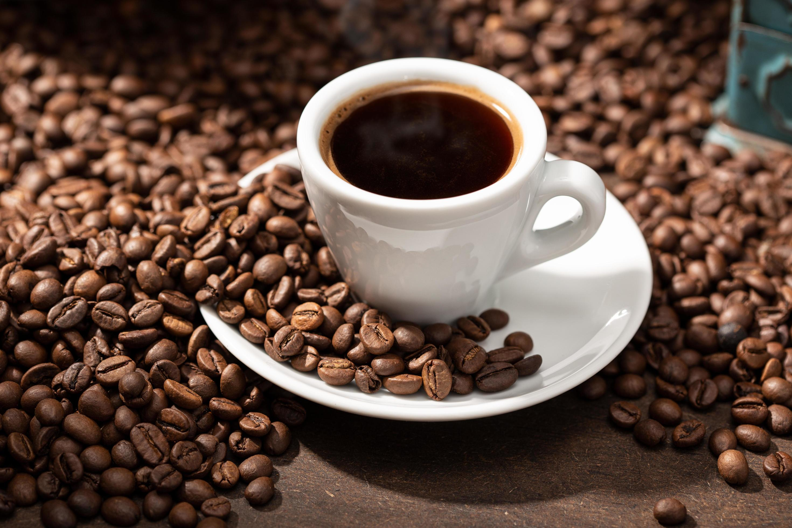

Trabalhando com Listas
Receitas de preparo de café
- Café Tradicional
-

-
Informações
- Preparo: 15 min
- Rendimento: 6 Porções
-
Ingredientes
- 3 xícaras de água
- Açúcar a gosto ou sem açúcar
- 3 colheres (sopa) de pó de café
- 1 filtro de papel
-
Preparo
- Em uma chaleira coloque a água
- Em um suporte para filtro, coloque o filtro de papel e o pó.
- Quando ferver a água despejar sobre o pó, que passará pelo filtro caindo diretamente na garrafa ou bule.
- Adoce a gosto caso queira
- Servir